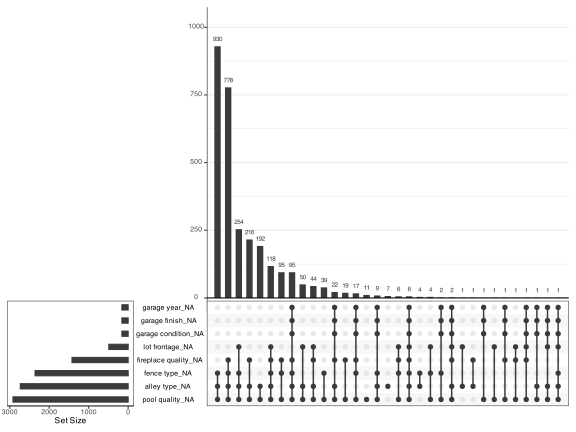
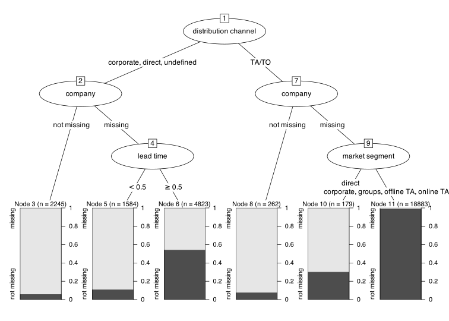
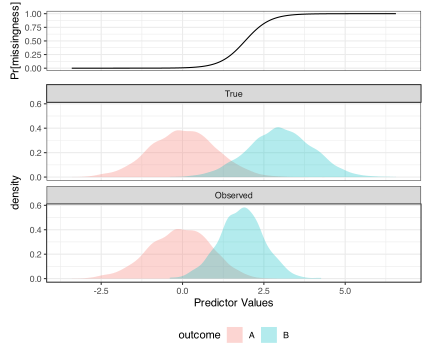
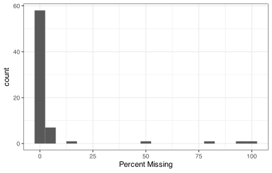
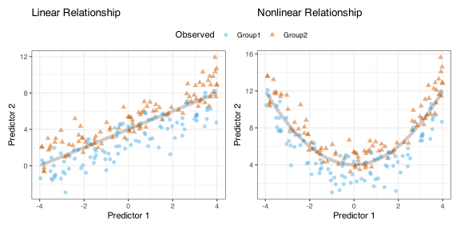
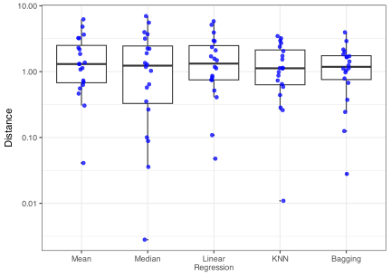

4 Missing Data
It is not uncommon for some predictor values to be unknown. There can be a multitude of reasons. To illustrate, let’s consider a laboratory test for a respiratory disease. One or more results may be missing due to a failed control or an inappropriate database join. It is also possible that the test itself failed to produce a result. For example, the test might fail for diagnostics that use throat swabs because an interfering substance, such as food coloring from a lozenge, is on the swab.
One of our illustrative data, the Ames housing data, has missing values in 22 predictors. Figure 4.1 illustrates the occurrence of missingness for the these data. This figure presents the full rectangular data matrix where each property (sorted alphabetically by neighborhood) is on the x-axis, and each predictor is on the y-axis. Red indicates that the value was missing in the data.
The figure highlights several characteristics. The most noteworthy: missing data affects every property (i.e., row) in the data. Pool quality is missing for nearly every property, while the columns for types of alleys, basements, and fences as well as the quality of fireplaces are missing for the vast majority of properties. Second, there are specific patterns of missing information that are visually apparent. For example, when missing data occurs in one garage variable, it likely occurs across other garage variables (condition, finish, quality, type, and year built). The same is true for basement variables (condition, exposure, quality, type 1, and type 2). Other variables, like fence, fireplace quality, and lot frontage do not appear to have any visual structure to their missingness.
An “upset plot” is a method for visualizing high-dimensional Venn diagrams (Lex et al. 2014). We can use this to explore potential patterns of missingness across predictors. For example, Figure 4.2 shows that the majority of the properties in Ames are missing values for ally, fence, or pool.
#> Warning: `aes_string()` was deprecated in ggplot2 3.0.0.
#> ℹ Please use tidy evaluation idioms with `aes()`.
#> ℹ See also `vignette("ggplot2-in-packages")` for more information.
#> ℹ The deprecated feature was likely used in the UpSetR package.
#> Please report the issue to the authors.
#> Warning: Using `size` aesthetic for lines was deprecated in ggplot2 3.4.0.
#> ℹ Please use `linewidth` instead.
#> ℹ The deprecated feature was likely used in the UpSetR package.
#> Please report the issue to the authors.
#> Warning: The `size` argument of `element_line()` is deprecated as of ggplot2 3.4.0.
#> ℹ Please use the `linewidth` argument instead.
#> ℹ The deprecated feature was likely used in the UpSetR package.
#> Please report the issue to the authors.

The problem with missing data is that many models are not naturally equipped to deal with this lack of information. As a simple example, consider the multiple linear regression model. Deriving the regression coefficients depends on operations on the predictor values (e.g., computing the covariance matrix). These calculations cannot be performed if the predictors contain any missing values; this is also true for the majority of models. Consequently, it is crucial to address the presence of missing data to build any of these predictive methods1. In addition to addressing missing data, the pattern and nature of missingness can sometimes serve as a significant predictor of the response. In this chapter, we will explore the root causes of missing data, examine approaches for resolving the problem, and understand when it should be addressed in the modeling process.
Allison (2002) has an excellent and succinct summary of relevant statistical concepts and methods. Emmanuel et al. (2021) and Hasan et al. (2021) provide literature surveys on methods for missing data, while Nijman et al. (2022) describes a survey on just how badly these topics are described/documented in specific studies in the literature.
4.1 Root Causes
When encountering missing data, the primary question is, “Why are these values missing?” Knowing is a good idea, and the answer can substantially affect how we compensate for the problem. In some instances, the answer might be apparent or can be inferred from the data. In the example of the laboratory test, suppose a random defect in the test kit was to blame for missing measurements. In this instance, the value was missing completely at random (MCAR). MCAR means that the mechanisms that affect missingness in the predictor are known and unrelated to the columns in the data set. When this is the case, our complete case sample (achieved by using rows with no missing values) corresponds to sampling from the same distribution as the entire data set (i.e., includes the missing rows).
With MCAR, we have significant latitude in terms of how to handle the situation. A complete case analysis will not induce any systematic bias in our results but, due to the smaller sample size, the model will have increased variability.
As a counter-example, suppose that patients with more severe respiratory illnesses were more likely to deal with their symptoms by using a lozenge, possibly leading to missing values. If the likelihood of a missing predictor value is a function of some other variable(s) contained in the data, this is called missing at random (MAR). You can think of this as conditional MCAR: each each level of a column describing lozenge usage (yes/no), the data are MCAR. Bhaskaran and Smeeth (2014) contains practical examples that help distinguish MAR and MCAR.
Another example data set will be introduced in Section 6.1, where we try to predict the cost of a hotel room (known as the “average daily rate” or ADR). The data set includes data on the method of booking the room, such as the name of the travel agent, the travel company, and the customer’s country of origin. The agent variable in the hotel rate data was missing for 22.7% of the data. We don’t always know if the agent is missing because no agent was used or because the value was not recorded. Treating the missingness of the agent as a binary outcome, we can use a simple recursive partitioning model (?sec-cart-cls) to understand potential relationships with other predictors. This might suggest the mechanism(s) influencing the occurrence of missing data. Figure 4.3 illustrates the predictors that partition the missing agent data into increasing homogeneous groups. For example, non-missing company values are highly associated with missing values. This might mean that the company making the reservation used automated systems instead of a specific person in the company being associated with the reservation. Lead time also appears to be related to missingness, with shorter lead times occurring more frequently with missing agent values. We don’t know whether lead time influences missingness or vice-versus. However, this analysis would provide a direction to begin an investigation.

With some simple exploration, as demonstrated with the Ames and hotel rate data sets, we can understand the causes or potential reasons for missing data. However, determining the cause of missing data may be more challenging for many other data sets. We need a framework to understand and manage missing data in such cases.
One helpful framework involves examining the mechanisms behind missing data, including structural deficiencies, random occurrences, and specific causes.
First, there can be structural deficiencies. This type of missing data arises when necessary information about a predictor is omitted. Moreover, it is often the easiest to address once the missing information has been identified. The agent variable in the hotel rate data is one example of a structural deficiency. As a second example, we saw earlier in the Ames housing data that several of the garage predictors were simultaneously missing across 5% of homes. The missing information was because these homes did not have a garage2. Some or all of the variables of finish, quality, type, and year built for garages will likely be important for determining a home’s value. Therefore, we will need an approach to address these structural deficiencies.
There can also be random occurrences. Missing values often occur at random with no defined root cause. For example, a patient in a clinical trial may miss a scheduled visit due to a scheduling mishap. As another example, sporadically occurring severe weather can create missing data for collection devices that depend on continuous power. Generally, missing data due to random occurrences can happen a small percentage of the time and can be remedied. However, if randomly missing data occurs a large percentage of the time, the measurement system should be evaluated, and the collected variables should be scrutinized before being included in the modeling process. For a detailed understanding of this type of problem, see Little and Rubin (2019).
We might be able to identify specific causes for missingness. As we will see later in this chapter (Section 4.2.4), several basement variables in the original Ames data have missing values. This information was not missing because there was some failure in recording the data. The explanation was much simpler: these homes had no basements. This type of missing data is the most challenging to manage, and the appropriateness of techniques can vary. Hence, understanding the nature of the missing data is crucial before applying any methods.
The worst situation is missing not at random (MNAR)3, where we do not know the factors that influence the probability that values are missing. The best approach to MNAR data is not to have MNAR data; it is essential to determine why the data are missing and, hopefully, relate that to columns in the data. Otherwise, we can use imputations and other methods described below to solve the issues. However, there will likely be significant ambiguity about the analysis and how well it works. With models built in the MNAR assumption, it would behoove us to conduct extensive sensitivity analyses to assess the robustness of our approach to the missing data problem.
As an example, Chapters 12 - 15 of Kuhn and Johnson (2013) showed multiple classification models to predict the probability that a grant would be accepted. Two categorical predictors contained encoded values of “unknown” and had very high empirical associated with the outcome classes:
Informative missingness seemed to occur in these data; unknown values of the contract value band and sponsor code were heavily used in many models. This itself is a likely surrogate or signal for some other piece of information.
This is not a good place to be: we cannot explain the existence of two of our main predictors. It would be that the populations of grants that had missing data for these variables correspond to very successful results or that the process that assembled the data contains a systematic flaw. We do know that we can’t induce success in a grant application by just labeling the value as unknown. Clearly, we would want to investigate this situation to determine what is happening.
Understanding these mechanisms will guide us in choosing appropriate techniques for handling missing data appropriately.
4.2 Approaches for Resolving Missing Data
There are three general ways to resolve missing values: removal, imputation, or encoding. Each approach has advantages and disadvantages, and which we choose should depend on the specific problem context and data set. We will review these approaches in the subsections below and provide guidance on when each would be appropriate.
4.2.1 Models that Tolerate Missing Data
Instead of directly addressing the missing values, we could sidestep it by using models that tolerate missingness. Let’s examine a few.
The CART decision tree model (Breiman et al. 1984) recursively identifies variables and split points that optimally partition the data into subsets whose outcome frequency distributions are more homogeneous. For each selected variable and split point, additional variables and split points are identified with the next best ability to partition the data into more pure subsets. These additional variables are called surrogate splits. When a sample has a missing value for a predictor in the tree, the surrogate predictors are then used to direct the sample toward the appropriate terminal node.
While C5.0 (Quinlan 1993; Kuhn and Johnson 2013) is also a decision tree, it adopts a unique approach to addressing missing values. This method utilizes fractional counts in subsequent splits based on the frequency distribution of missing data for a predictor. This approach enables the model to estimate where the missing values might fall within the partitioning.
Boosted trees, such as xgboost (Chen and Guestrin 2016), are also based on a recursive partitioning framework. However, xgboost’s approach to addressing missing data is more complex and is called sparsity-aware split finding. In the model-building process, the algorithm determines which direction would be more optimal for each node in the tree if a sample had a missing value for that predictor.
Random forest (Breiman 2001) has several approaches to handling missing values. The naive approach internally imputes using the median of non-missing values for continuous predictors or the most frequent value for categorical predictors. A more advanced approach identifies the nearest non-missing samples to the sample with the missing value and imputes the value based on a weighted distance score.
The primary benefit of these models is that we can use the original data as-is. They are eliminate the propagation of errors that can occur when imputation tools are used. The drawback is that the number of models that can be applied to the data is very limited. As we know from the No Free Lunch theorem, no one model will be optimal for all problems. Therefore, we must address the missing data problem head-on to adequately explore the predictive ability of a wide range of models.
These models only solve the logistical aspect of missing data. If the nature of missingness in your data causes a systematic bias, the models above will not correct this bias.
For example, naive Bayes (Webb, Keogh, and Miikkulainen 2010) builds models by analyzing each predictor independently of the others. When a predictor contains a missing value, this missing sample’s information is omitted from probability calculations for only the affected predictors. If a distribution is systematically affected by missingness, the probabilities computed during prediction will be biased and may result in poor results in new samples. If missing data informs our understanding of the response, omitting the missing samples will be detrimental to the model.
Figure 4.4 shows a two-class classification example where one predictor is used. The top panel shows the probability of a missing predictor value is related to its own value (i.e., MCAR). The predictor value is less likely to be complete was its value increases.
Naive Bayes would use the predictor data to compute conditional densities of the predictor for each outcome class. The middle plot shows what these densities should resemble if the dataset were complete. There is a small overlap between the predictor densities; decent model performance is achievable.

The bottom set of densities reflects the observed data. The density for class level B is more affected and would appear to have a tighter distribution. This induces more overlap in the densities, making the classification problem more difficult.
This demonstrates that a model being agnostic to missing values does not mean that the missing value problem does not go away.
4.2.2 Removal
The simplest method for managing missing data is to eliminate the predictors or samples that contain them. However, the deletion of data requires careful consideration of several factors within the dataset. When deleting data, the order in which we assess the proportion of missing values (in columns or rows) is important to consider. In some scenarios, there are many more predictors than samples; samples are often difficult or expensive to collect. In this case, it would be wise to first identify predictors that should be removed due to excessive missing values, then proceed to identify and possibly remove samples that have excessive missing values. If, on the other hand, the data contain many more samples than predictors, then the removal procedure could be reversed. In any case, however, we need to remember that the samples are our currency for tuning models and assessing model performance. Therefore, we will often place a higher priority on preserving samples over predictors.

Let’s return to the Ames data set. In this example, there are many more samples (\(n\)=2930) than predictors (\(p\)=73). While this is true, Figure 4.1 clearly illustrates that a few of the predictors were missing for the vast majority of the samples. The proportion of missing values across the predictors is shown in Figure 4.5. This figure reveals that 4 predictors have more than 20% missing sample values. Because the percentage of missing values is large, these predictors would be candidates for removal. In the hotel rate data, the agent and company predictors had missing values of 22.7% and 91%, respectively. In our experience, we have tended to remove predictors that have more than 20%-30% missing values. This percentage is simply a point of guidance and not a hard rule to be applied to every data set. After removing these predictors, the Ames data set now has 0.7% missing values and the hotel rate data set had 0.05% missing values.
After removing predictors with excessive missing data, we can then consider removing samples with excessive missing data. No sample in the Ames data had more than 12.1% of missing predictors. The samples with the greatest percentage of missing predictors were those that had missing basement information. No sample in the hotel rate data had more than 3.6% of missing predictors. Neither of these percentages is large enough to merit the removal of these samples. Therefore, we will keep these samples and utilize an imputation or encoding procedure to fill in these gaps.
There are a couple of caveats to removing predictors or samples based on missing information. First, the missing information in a predictor may be informative for predicting the response. For the hotel rate data, the missing status of the agent variable is associated with the response. Therefore, it may be better to encode the missing status for this variable rather than eliminate the variable altogether. This approach will be discussed below. Second, as seen in Figure 4.4, removing samples may create a bias in the remaining data which would impact the predictive ability of the model on future samples.
4.2.3 Imputation
Imputation is the process of using other existing information (i.e., the predictors) to estimate what each missing value might have been. In other words, we will build an imputation model to fill in the missing column(s) so that we can run the primary machine-learning model. A separate imputation model is required for each column that contains (or could contain) missing data.
Imputation is a well-researched statistical methodology. This technique has traditionally been used for inferential models, focusing on maintaining the validity of test statistics to support hypothesis testing. As mentioned in earlier chapters, there is an important distinction between the objectives of statistical inference and prediction accuracy. See Sperrin et al. (2020) for a discussion related to imputation.
In the statistical literature (D’Agostino McGowan, Lotspeich, and Hepler 2024), two terms can help us understand the distinction:
Deterministic imputation creates a single model to estimate the missing predictor’s value using one or more predictors in the training set4. After imputation, the new values are treated as known (i.e., not random variables).
Stochastic imputation involves creating many imputation models with the goal of creating a distribution of possible values for the missing data. It is used primarily to conduct proper inferential analyses and includes traditional multiple imputation techniques.
One important concept heavily featured in subsequent chapters is resampling, where we’ll train our preprocessors and supervised models using slightly different data sets. The goal of resampling is to estimate model performance accurately. Although resampling will involve repeated re-imputation of missing data, it is not a stochastic imputation method.
Let’s highlight a couple of key distinctions when considering imputation for the purpose of inference versus prediction. One is that inferential models generally make assumptions about the statistical distributions of the predictors. Conversely, many machine learning models, like support vector machines, tree-based models, and neural networks, do not make such assumptions. Therefore, stochastic imputation is less relevant for predictive models. A second difference is that multiple imputation methods focus on understanding relationships within the existing data, while predictive models aim for generalizable relationships to unseen samples. This difference has implications on when imputation should be applied to the data, which will be discussed later in Section 4.4. Finally, in some cases, including the outcome data in the imputation model might make sense. This is inappropriate for our goals here (i.e., deterministic imputation). While D’Agostino McGowan, Lotspeich, and Hepler (2024) explains the theoretical reasons why this is the case, our objections can be viewed as purely functional: if we require the outcome to make decisions, we cannot predict new samples where the outcome is unknown.
What are the important characteristics of an imputation technique that will be used in a prediction model? There are a few that we will focus on:
Tolerate other missing data: as we saw in the Ames data, multiple variables within a sample may be missing. Therefore, an imputation technique should be feasible in the presence of other missing data.
Handle different predictor types: many data sets have different variables, such as numeric, categorical, and ordinal. The method should be able to accommodate numeric and qualitative predictors seamlessly and without changing the nature of the data (e.g., categorical predictors should be be converted to indicator columns).
Produce efficient prediction equations: each predictor with missing data will require an equation. Imputation for large data sets, when used with resampling approaches during model training, will increase computation time as well as the size of the imputation equation. Therefore, the more efficient the imputation approach, the less computation time will be needed to obtain the final model.
Ensure robustness: the method should be stable and not overly affected by outliers.
Be accurate: the results should be close to what the actual value would have been5.
By considering each of these characteristics, imputation can effectively alleviate missing data problems, enhancing models’ quality and predictive performance. There are several imputation methods that meet most or all of the above characteristics. These imputation techniques fall into two general categories: most likely value and model-based (i.e., “regression imputation”).
To illustrate how these methods work, we will use two simple, simulated two-predictor classification data sets. Figure 4.6 displays the simulated data. For these data sets, the optimal class separation is defined by the black lines. We will initially focus on the nonlinear data set. From these data set, 10% of the samples will be randomly selected. Of these samples, half will have the value of first predictor deleted, while the other half will have the second predictor deleted.

4.2.4 Encoding Missing Data
When a predictor takes categorical values, an alternative approach to imputation is encoding. Consider the basement exposure variable in the original Ames data set. Possible exposure values are: “good,” “average,” “minimum,” and “no exposure” and contains 83 missing values. The most likely value approach would impute the missing values with the “no exposure” category since this is the most frequent category. A model-based approach would utilize information across the rest of the variables to predict which of the 4 available categories would be best. Would imputing with one of the 4 available categories be a good approach for the missing samples? In this case, the answer is “no!”. With a little more investigation, we can see that the reason the exposure variable contains missing values for these houses is because these houses do not have basements.
When a value is missing for a specific reason like we see with the basement exposure variable, encoding the missing information will be more informative to the models. In an encoding procedure, we simply acknowledge that the value is missing by creating a new category such as “unknown,” “unspecified,” or “not applicable.” In the case of basement exposure, a more appropriate categorization would be “no basement.”
The encoding procedure is mostly used for categorical variables. However, there are times when encoding can be applied to continuous variables. In many analytical procedures, an instrument cannot reliably provide measurements below a specified limit. Measurements of samples above the limit are returned as numeric values, but measurements below the limit are returned as either “BLQ” (below lower limit of quantitation) or “< 3.2”, where 3.2 is the lower limit of quantitation. These values cannot be included with the continuous values. What can we do in this situation? One approach would be to impute the BLQ values with a reasonable numeric value less than lower limit of quantitation6. This information could also be encoded by creating a new variable that contains two values, “ALQ” and “BLQ”, which would identify samples that could and could not be measured. If this variable is related to the outcome, then the ability to measure the quantity may be predictively informative.
4.3 Specific Imputation Methods
Technically, almost any model that can make a prediction is a potential candidate for imputing data. However, some are better than others and we summarize a few of the most used below.
4.3.1 Most Likely Value
The simplest approach to imputation is to replace a missing value with its most likely value based on that predictor’s non-missing values. For numeric data, the most likely value can be summarized by the mean or median. For categorical data, the most likely value is the mode (or most frequent value). Most likely value imputation meets many of the desirable characteristics for imputation. They can tolerate missing values from other predictors (because they operate one-predictor-at-a-time) and can handle different predictor types while also producing efficient prediction equations. Furthermore, achieving a robust imputation can be done using either the median or the trimmed mean (Barnett and Lewis 1994). The trimmed mean is the mean of the middle-most samples. For example, we could compute the mean of the samples with 5% of the the most extreme (smallest and largest) samples removed. Doing this would minimize the impact of any extreme sample values on the computation of the mean. However, imputing with the most likely value for a single predictor may not produce an imputed value that is close to the true value.
To demonstrate, we have imputed the missing values in the simulated data using the mean and median imputation techniques for both data sets seen in Figure 4.6. Figure 4.7 shows the values of the original samples that were selected to have missing values along with the imputed values based on mean and median imputation.
For both data sets, the imputed values are towards the center over the overall plot and away from the parabolic/linear regions where we know the actual data are. The median imputed values are less affected by extreme values and are closer to the region of actual data. Both techniques, however, are unable to place most of the missing data near their true values.
For many data sets, and especially for sets with a minimal number of missing values, most likely value imputation may be sufficiently good for what we need. The procedure is fast but is terribly inaccurate. But there may be occasions when when we need the imputations to be closer to the true (yet unknown) values.
#| '!! shinylive warning !!': |
#| shinylive does not work in self-contained HTML documents.
#| Please set `embed-resources: false` in your metadata.
#| label: shiny-imputation-exploration
#| out-width: "80%"
#| viewerHeight: 425
#| standalone: true
library(shiny)
library(ggplot2)
library(dplyr)
library(recipes)
library(bslib)
source("https://raw.githubusercontent.com/aml4td/website/main/R/shiny-setup.R")
source("https://raw.githubusercontent.com/aml4td/website/main/R/shiny-imputation-exploration.R")
app4.3.2 Linear Methods
When a data set has many predictors and the predictors have some correlation with each other, then multiple linear regression can be a more effective imputation technique than the most likely value methods. That is, multiple linear regression will utilize the information contained in other predictors to estimate an imputed value that will be closer to what the actual value would have been. Multiple linear regression also produces a straightforward, compact prediction equation for each predictor with missing values which is computationally efficient when applied to new samples. However, this technique cannot naturally handle missing values in the predictors used to develop the imputation model. In practice, therefore, the imputation approach utilizes a complete case analysis.
Returning to the simulation illustration, the linear imputation method creates two simple linear regression models, where one model uses predictor 1 as the response and predictor 2 as the predictor, and the other model reverses the roles of the predictors.
Selecting the nonlinear data set in Figure 4.7 illustrates the impact of this technique. Assuming that we have conducted some exploratory data analysis, we would be aware of the nonlinear relationship between the predictors. As such, the imputation model for the second predictor included an additional squared term. This greatly improves the imputation quality. Unfortunately, the same approach is not possible for imputing the first predictor (which is poorly predicted).
However, if these predictors were linearly related, then this technique would generate values closer to the actual values. This can be seen by choosing the linear data set in Figure 4.7.
Since this imputation method is basically linear regression, we can use it for slightly more sophisticated results. For example, if we want to impute a predictor’s values based on some other predictors categories, linear regression can achieve this. There is also the possibility of interactions, splines, and so on (as long as the “predictors” in the imputation model are not missing themselves).
When the predictor that requires imputation is categorical, then logistic or multinomial regression can be used to generate an imputed category.
Figure 4.8 provides another visual comparison of the imputation techniques. In this figure, each point represents the Euclidean distance from the imputed sample to its known location. The mean, median, and linear methods have similar distributions of distances.

4.3.3 Nearest Neighbors
\(K\)-nearest neighbor calculations will be discussed in Section 7.3, where it will be used in some multidimensional scaling methods, and in ?sec-knn-cls in the context of a supervised model. In short, when imputing a missing predictor value for a new sample, the \(K\) most similar samples from the training set are determined (using all complete predictor values). The \(K\) predictor values for the predictor of interest are summarized via the mean (for numeric outcomes) or the mode. This summary statistic is used to fill in the missing value. This is a localized version of the most likely value approach.
Figure 4.7 shows that a nearest-neighbor approach generally increases the accuracy of the imputation, especially for the first predictor. For the linear case, both predictors have high-quality imputations.
4.3.4 Trees
As mentioned earlier, tree-based models are a reasonable choice for imputation techniques because many types of trees do not require complete data themselves. They generally provide good accuracy and do not extrapolate values beyond the bounds of the training data. While a single tree can be used for imputation, it will likely have low bias but high variance. Ideally, we would like imputed values to have low bias as well as low variance.
Tree ensembles, such as bagging and random forests (Chapters ?sec-trees-cls and ?sec-trees-reg), help solve this issue since they blend the predictors from many individual tree models. However, these methods can be computationally taxing for moderate- to large-sized data sets. Specifically, random forests require many trees (hundreds to thousands) to achieve a stable and reliable imputation model. This comes at the cost of a large computational footprint, which may become a challenge as the number of predictors with missing data increases; a separate model must be trained and retained for each predictor. As discussed later, bagged tree models tend to be smaller and faster than their random forest counterparts. Typically, there is a marginal loss in accuracy from using bagging instead of random forests.
Like nearest-neighbor imputation, the bagged tree places most of the imputed values close to the original data distribution, as seen in Figure 4.7. The distribution of distances (Figure 4.8) for bagged imputation is similar to that of nearest neighbors. Figure 4.7 provides a comparison of the imputation techniques discussed here with the nonlinear simulated data and a data set in which the two groups are optimally separated by a linear boundary. In this comparison, the percentage of missing data can be adjusted to demonstrate how each imputation method performs.
Which imputation technique we choose depends on the problem. If a few predictors have missing values, then using \(K\)-NN or bagged imputation may not add much computational burden to the modeling process. However, if many predictors have missing values and the data set is large, then the model-based imputation techniques may become cumbersome. In this case, beginning with a most likely value imputation approach may be prudent. If the predictive performance of the optimally tuned machine learning technique is high, then the imputation approach was sufficient. However, if predictive performance lags, we could implement a different imputation technique while training models.
4.4 When to Address Missing Data
When missing values are present, it may be tempting to immediately address this problem and create a complete data set prior to beginning the modeling or data splitting processes. We recommend that imputation be done as part of the model development process as discussed in Chapter 2. In the diagram presented in Figure 2.10, imputation would occur as part of the training process. Recall, the model based imputation techniques discussed earlier have parameters that can be tuned. Understanding how these parameters affect model performance would be done during the training process, and an optimal value can be selected.
It is also important to understand that imputation is fundamentally a preprocessing step–we must do this before commencing model building. Therefore, we must think about where imputation should be located in the order of preprocessing steps. Specifically, imputation should occur as the first step. It is advisable to impute qualitative predictors before creating indicator variables to maintain the binary nature of the resulting data. Moreover, imputation should precede parameter estimation steps. For example, if centering and scaling are done before imputation, the resulting means and standard deviations will reflect biases and issues from the missing data. This approach ensures the integrity and accuracy of subsequent data processing and analysis stages.
Chapter References
Allison, P. 2002. Missing Data. SAGE Publications, Inc.
Barnett, V, and T Lewis. 1994. Outliers in Statistical Data. Vol. 3. 1. Wiley New York.
Bhaskaran, K, and L Smeeth. 2014. “What Is the Difference Between Missing Completely at Random and Missing at Random?” International Journal of Epidemiology 43 (4): 1336–39.
Breiman, L. 2001. “Random Forests.” Machine Learning 45: 5–32.
Breiman, L, J Friedman, C Stone, and RA Olshen. 1984. Classification and Regression Trees. CRC Press.
Chen, T, and C Guestrin. 2016. “Xgboost: A Scalable Tree Boosting System.” In Proceedings of the 22nd Acm Sigkdd International Conference on Knowledge Discovery and Data Mining, 785–94.
D’Agostino McGowan, L, S Lotspeich, and S Hepler. 2024. “The "Why" Behind Including "Y" in Your Imputation Model.” Statistical Methods in Medical Research 33 (6): 996–1020.
Emmanuel, T, T Maupong, D Mpoeleng, T Semong, B Mphago, and O Tabona. 2021. “A Survey on Missing Data in Machine Learning.” Journal of Big Data 8: 1–37.
Hasan, K, A Alam, S Roy, A Dutta, T Jawad, and S Das. 2021. “Missing Value Imputation Affects the Performance of Machine Learning: A Review and Analysis of the Literature (2010-2021).” Informatics in Medicine Unlocked 27: 100799.
Kuhn, M, and K Johnson. 2013. Applied Predictive Modeling. Springer.
Lex, A, N Gehlenborg, H Strobelt, R Vuillemot, and H Pfister. 2014. “UpSet: Visualization of Intersecting Sets.” IEEE Transactions on Visualization and Computer Graphics 20 (12): 1983–92.
Little, R, and D Rubin. 2019. Statistical Analysis with Missing Data. Vol. 793. John Wiley & Sons.
Nijman, SWJ, AM Leeuwenberg, I Beekers, I Verkouter, JJL Jacobs, ML Bots, FW Asselbergs, KGM Moons, and TPA Debray. 2022. “Missing Data Is Poorly Handled and Reported in Prediction Model Studies Using Machine Learning: A Literature Review.” Journal of Clinical Epidemiology 142: 218–29.
Quinlan, R. 1993. C4.5: Programs for Machine Learning. Morgan Kaufmann Publishers.
Sisk, R, M Sperrin, N Peek, M van Smeden, and G Martin. 2023. “Imputation and Missing Indicators for Handling Missing Data in the Development and Deployment of Clinical Prediction Models: A Simulation Study.” Statistical Methods in Medical Research 32 (8): 1461–77.
Sperrin, M, G Martin, R Sisk, and N Peek. 2020. “Missing Data Should Be Handled Differently for Prediction Than for Description or Causal Explanation.” Journal of Clinical Epidemiology 125: 183–87.
Webb, G, E Keogh, and R Miikkulainen. 2010. “Naı̈ve Bayes.” Encyclopedia of Machine Learning 15 (1): 713–14.
Exceptions are listed below.↩︎
However, note that these properties have complete values for their size column (i.e., a zero ft2 garage). ↩︎
Also called not missing at random (NMAR), informative missingness, or nonignorable missing data.↩︎
Sisk et al. (2023) calls this approach, when using multiple predictors for imputation, as “regression imputation.” Their definition would exclude simple “most likely value” imputations.↩︎
Unfortunately, we may not be able to judge the accuracy of the imputation for most data sets since the missing data will never be known.↩︎
One approach is to generate a random uniform predictor value between zero and the limit of quantitation).↩︎